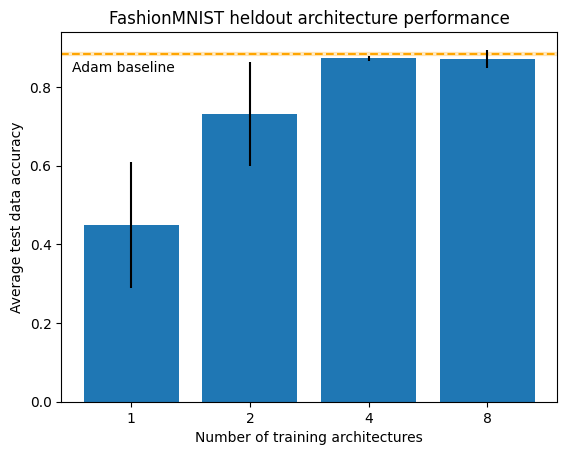
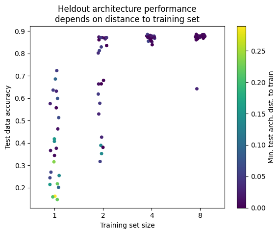
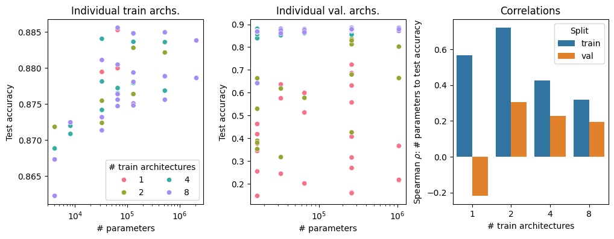

Why borrow from biology
Brains learn without a backward pass. A synapse is adjusted by signals available right where it sits — the activity of the two neurons it connects — not by a global error gradient computed across the whole organism. That locality buys properties deep learning struggles with: brains learn continuously, rewire themselves, tolerate damage, and run on a fraction of the power. And the recipe for building all that circuitry is compressed into a genome far smaller than the circuitry itself.
MetaNCA takes that compression seriously. Instead of storing a trained network, it stores a rule for producing one — a small program, applied locally and repeatedly, whose collective behavior is a trained model.
The setup: two networks
There are two networks in play, and keeping them straight is the whole trick.
- The task network is the thing being trained — an ordinary MLP that maps an MNIST image to ten digit scores. Its weights are what you see churning in the demo.
- The local rule network is small, fixed, and shared. It looks at one weight at a time and proposes a tiny change to it. This is the only thing that was learned, and it is what gets reused across every architecture.
Each weight \(w_{ij}\) also carries a little hidden state vector — scratch memory that travels alongside the weight across update steps, letting the rule store and pass along information beyond the single scalar value. It starts life as a positional code — which layer this weight lives in, which two neurons it connects — and evolves from there, so the rule always knows roughly where it is operating even though it never sees the data.
What "local" means on a weight graph
For a pixel, "neighbors" is obvious — the cells around it. For a weight, MetaNCA defines neighborhood on the network's computation graph. A weight connects an input neuron to an output neuron, so it has two natural neighborhoods:
- its forward neighbors: the other weights that feed the same output neuron, plus the weights in the next layer that this neuron feeds into;
- its backward neighbors: the weights that share its input neuron, plus the weights from the previous layer that produce that input.
Crucially, the rule never sees how many neighbors there are as a fixed number — it aggregates over whatever neighbors exist. That is exactly why it doesn't care about the size of a layer, and why you can resize the network in the demo and the same rule still applies.
How one step works
A single MetaNCA update sweeps the whole network:
- For every weight, gather its forward and backward neighborhoods.
- Summarize each neighborhood with the shared attention block.
- Feed the weight, its hidden state, and the two summaries to the rule's MLP head.
- The head returns \(\Delta w\) and \(\Delta\vec h\); a random 80% of the weights apply their update this step — a stochastic, asynchronous flavor of update inherited from cellular automata, and the same fraction used in meta-training.
Repeat. In the demo, each rendered frame is exactly one of these sweeps (the speed slider sets how many run per second). The weights start as noise; within a few steps a coherent structure appears in the heatmaps, and accuracy lifts off the 10% floor — the rule reaches its best accuracy in roughly the number of steps it was meta-trained to use, then holds it steady.
One detail worth stating plainly: the rule never sees the data. It reads weights and hidden states, not images. The image only enters when we measure how good the grown network is — which, during meta-training, is the signal used to improve the rule. (That also means the weight animation and the accuracy readout are computed independently in the demo.)
Training the rule
Meta-training is the one place a gradient appears. We start a fresh random task network, run \(T\) local-rule steps to grow it, measure its classification loss, and backpropagate that loss through the unrolled steps — but only into the rule's parameters. The task network is never updated by gradients; it is only ever edited by the rule. To force generality, the rule is trained against several task-network shapes at once, so it can't overfit the update dynamics to one architecture.
One more trick matters for what you see in the demo: a sample pool, borrowed from the Growing-NCA literature. If every meta-training episode started from fresh random weights, the rule would only ever be supervised for its first \(T\) steps — nothing would stop it from wrecking a network at step 30. So most episodes instead continue from a pool of networks the rule has already partially grown, with a fraction reset to fresh noise. The rule is thereby trained not just to build a classifier, but to leave a working one alone — which is why you can let the demo run for hundreds of steps and the accuracy holds instead of collapsing.
Architecture generalization — the payoff
Because the rule is defined purely from local neighborhoods, it transfers. The rule driving the demo was meta-trained on a few small MLPs, yet the architecture editor lets you hand it widths and depths it never trained on. A single ~82k-parameter rule stands in for an entire family of networks — which is a striking form of compression: not a trained model, but a compact generator of trained models. The paper also finds that architectural diversity during meta-training is what strengthens this transfer — a rule trained on several shapes generalizes better than one trained on one.
It is not magic. Generalization is strongest near the capacity range the rule was trained on and degrades for shapes far outside it; the smallest networks have the least room to encode a good classifier. The original work shows the effect across MLPs, CNNs, and ResNets on MNIST and CIFAR-100, scaling to task networks of two million parameters.
About this demo
Everything above runs for real in your browser. The rule driving it (~82k parameters) was meta-trained in JAX on six small MLP shapes — hidden layers of 10; 20–10; 30–10; 50–30–10; 80–10; and 64–32–10 — with the sample pool described above. In the reference JAX harness it grows a held-out 784→50→50→10 network to roughly 95% test accuracy in ten steps, and holds that accuracy when run far past its training horizon.
The in-browser implementation is handwritten WebGPU, and it is verified rather than trusted: against the original JAX code, across several architectures (including held-out ones), every rule step matches to floating-point precision and the resulting classifications are identical. Each step updates a random 80% of weights, matching meta-training. When you edit the architecture, surviving weights and hidden states are carried over on-GPU and only the new slots are re-initialized. The accuracy readout is computed live over a thousand test digits, and "ms/step" is measured on your own hardware.
Studying MetaNCA scaling
MetaNCA relies on the weight transformer to learn the cell hidden state aggregation operator. Despite the fact that our model is used for parameter generation, the parallels to language modeling are quite apparent: the weight transformer may be viewed as a model that learns the language of cell latents.
- LLMs learn compositions of tokens in text documents
- MetaNCA learn configurations of hidden states/weights in task architectures.
What is the relationship between scaling the number of training architecturesand heldout task network performance?We would like to understand better the ability of MetaNCA to generalize to unseen architectures.
Of course, architecture generalization for MetaNCA could mean either interpolation (the ability to adjust to unseen architectures within architecture grid) or extrapolation (ability to adjust outside of the grid specifications of the training architectures). The results below generally address the former.
Experimental setup
We train 4 different MetaNCA models withFashionMNIST on a fixed training budget (1.2K metaepochs), exposing them to 1, 2, 4, and 8 training architectures. Each architecture is an MLP with 3 hidden layers of nonincreasing dimensionalities ranging between 16 and 128 hidden units. We hold out the same architectures for every training run, randomly selecting the architecture training set. Each run is repeated 3 different times.
After training, we evaluate each model by generating weights for 8 different validation architectures and computing their accuracy on the FashionMNIST test set. As a baseline, we train every possible architecture in the described set to convergence using the Adam optimizer.
Results
We first calculated the average test accuracy across all heldout architectures (Fig. 1). A clear trend is depicted, showing that more architectures begets better performance, saturating at the Adam baseline.

Our intuition on the saturation towards the Adam baseline is that the set of architectures we use for training and validation are simply only so capable. MetaNCA recovering the Adam performance is quite positive, considering it manages to find an update rule that does so without gradients.
Heldout architecture distance to training set
We do notice in Fig. 1 that 8 training architectures only manages to narrowly
outperform over 4 architectures.
This can perhaps be attributed to the size of the universe
of architectures in this study is quite small.
Four random architectures evidently provide enough coverage to generalization to the heldout set.
To better understand this phenomenon, we calculate the distance of each heldout architecture to each
training architecture for each repetition, visualized in Fig. 2.
For this study, we define the architecture distance between two architectures as the cosine distancebetween each of their architecture vectors
: 3-dimensional arrays where the value of the i-th postion is the number of hidden units in the i-th layer of the network.
Fig. 2 suggests that indeed, 4 random architectures tends to provide enough support of
the architecture universe to achieve near matched performance to 8 architectures.
This is, of course, not necessarily the case for all sets of architectures.
We maintain the intuition that more architectures would beget better performance for more complex architecture
grids.
The relationship between capacity and performance
We further probe our results by correlating the task network accuracy with the number of parameters,
depicted in Fig. 3.
As shown, we can see strong correlations between capacity and performance in the training architectures,
but less apparent in the test set.
